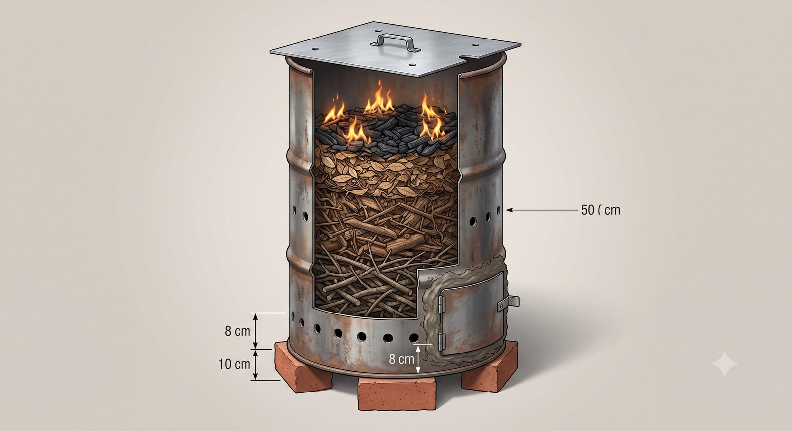

Panduan lengkap: apa itu biochar, cara membuat drum kiln-nya, dan spesifikasi teknis yang sudah dikunci di SOP
Kebun Kopi Wakaf Ngantang · dirangkum 31 Juli 2026 dari berkas SOP 8–9 Mei 2026
Status keputusan: SUDAH DIKUNCI, tinggal dijalankan. Biochar bukan gagasan baru di kebun ini — ia sudah berstatus LANJUT sebagai Inj-1 (Phase 2 SOP Inject, 8 Mei 2026), diperkuat ADR-027 (strategi soil amendment), dan dikonfirmasi lagi di SOP Addendum Manajemen Residu bagian B4 (29 Juli 2026) sebagai tujuan akhir kayu pangkasan.
Yang belum pernah terjadi: batch pertamanya belum pernah dibuat. Halaman ini menyatukan seluruh angka yang sudah dikunci supaya tinggal dieksekusi.
📌 Posisi terbaru — 1 Agustus 2026: biochar adalah TAHAP 2, bukan langkah pertama.
Dengan tenaga yang ada sekarang — hanya Wakif dan Lek Nardi — drum biochar terlalu menuntut untuk dijalankan lebih dulu: penjagaan suhu 2–4 jam per bakar, pendinginan tertutup 12–24 jam, ditambah charging sebelum arangnya boleh dipakai. Maka urutannya dibalik:
Tahap
Alat
Kapan
Tahap 1
Tong bakar — drum yang sama, tutup dibuka, satu pintu di bawah
Sekarang. Untuk membereskan gulma dan bahan sakit yang bertambah tiap minggu
Tahap 2
Drum biochar — drum yang sama persis, ditambah lubang udara dan tutup
Setelah ada tambahan tenaga. Tidak ada uang yang terbuang karena drumnya tidak diganti
Tiga tambahan yang mengubah tong bakar menjadi drum biochar: 8 lubang Ø 8 mm di ketinggian 8 cm · 6 lubang Ø 5 mm di ketinggian 40 cm · tutup pelat seng dengan 4 lubang Ø 3 mm. Ditambah satu perubahan cara: pintu bawah disumbat tanah liat saat mode biochar.
📎 Desain tong bakar tahap 1, aturan area bakar, dan perlakuan gulma ada di halaman Manajemen Residu Kebun.
🚨 Koreksi angka pH — 1 Agustus 2026. Halaman ini di beberapa tempat masih menulis tanah kebun "Andisol pH 5,0–5,5, masam". Itu asumsi dari literatur Andisol umum, bukan pengukuran kebun ini.
Yang terukur: uji tanah 16 Juni 2026 menunjukkan pH 6,2 — sudah ideal untuk Robusta, dan lembar uji itu sendiri berbunyi "pH tanah sudah memadai. Tidak diperlukan pengapuran."
Akibatnya untuk kajian ini: manfaat "menaikkan pH" berubah dari keuntungan menjadi hal yang harus dijaga jangan sampai kebablasan. Tiga manfaat biochar yang lain — menahan air, menahan hara, dan menjadi rumah mikroba — tetap berlaku penuh, dan ketiganya itulah alasan biochar tetap dijalankan. Bagian 8 dan bagian tentang abu di halaman ini sudah diperbaiki mengikuti angka terukur.
Dosis
1 kg
per pohon
Suhu target
300–500°C
2–4 jam
Hasil per batch
30–50 kg
25–50% berat bahan
Balik modal
2–3 thn
yield +15–30%
1 Apa itu biochar — dan kenapa bukan sekadar arang
Analogi paling dekat: arang BBQ untuk bakar sate. Arang itu kayu yang dibakar dengan cara khusus — udaranya dibatasi, jadi kayunya tidak habis menjadi abu, melainkan berubah jadi bongkahan hitam berpori. Biochar = arang seperti itu, tapi dibuat dari limbah kebun, dan bukan untuk dibakar lagi — melainkan untuk dimakan tanah.
Bedanya dengan pupuk kandang atau kompos: kompos habis terurai dalam 6 bulan. Biochar bertahan puluhan hingga ratusan tahun di dalam tanah, karena karbonnya sudah dikunci dalam bentuk yang sangat sulit diurai mikroba. Sekali ditebar, manfaatnya menetap.
📖 Istilah teknis yang perlu Adib kuasai — supaya bisa bicara setara dengan penjual drum, tukang bengkel las, dan tim BRIN. Istilahnya tetap dipakai, penjelasannya yang disederhanakan.
Istilah
Artinya sederhana
Kenapa penting
Pirolisis(pyrolysis)
Membakar dengan udara dibatasi — bukan dipadamkan, bukan pula dibiarkan berkobar
Ini pembeda antara "bikin biochar" dan "bakar sampah". Sebut istilah ini saat bicara ke BRIN.
Kiln(baca: kiln)
Tungku — ruang tertutup untuk memanaskan bahan pada suhu tinggi secara terkendali
Kata yang sama dipakai untuk tungku batu bata, gerabah, kapur, semen, dan pengering kayu. Intinya: bukan sekadar api, tapi api yang dikurung dan diatur.
Drum kiln
Tungku yang dibuat dari drum bekas
Sebut istilah ini ke tukang las atau BRIN dan mereka langsung paham maksudnya. Kalau bilang "drum buat bakar arang", bisa disangka tong sampah bakar — beda pekerjaan, beda hasil.
Udara primer / sekunder
Lubang bawah = udara masuk untuk bara. Lubang tengah = udara tambahan supaya asapnya ikut terbakar
Menjelaskan kenapa lubangnya ada dua tinggi berbeda, bukan asal bor.
Rendemen
Berapa persen bahan yang jadi produk jadi
Adib sudah pakai istilah ini di panen (cherry → dried). Sama persis maknanya di sini.
Charging biochar(pengisian)
Merendam biochar di air pupuk/kompos sebelum ditebar
Wajib. Kalau dilewati, biochar justru menyedot hara dari tanah. Lihat bagian 6.
🚨 Tiga istilah yang bunyinya mirip kosakata Adib sehari-hari — hati-hati tertukar:
"Charging" di sini bukan mengisi daya baterai HP. Artinya merendam arang di air pupuk supaya pori-porinya penuh hara lebih dulu.
"Retensi air"bukan retensi memori dalam psikologi. Artinya kemampuan tanah menahan air supaya tidak langsung lolos ke bawah.
"Top-down burn"bukan pendekatan top-down dalam manajemen. Artinya harfiah: apinya dinyalakan dari permukaan atas tumpukan, lalu merambat turun.
2 Spesifikasi drum — gambar teknis
Gambar 1. Potongan melintang drum kiln 200 L — ukuran badan drum, tiga baris lubang udara, susunan tiga lapis bahan, dan batas isi 70%.
Opsi 2 — versi lengkap: keranjang saringan + pintu pembersihan
Gambar 1 adalah rancangan dasar: drum polos, diisi langsung, dikosongkan dari atas. Gambar di bawah menambahkan dua hal yang muncul dari pertanyaan lapangan — bagaimana mengeluarkan arangnya dan bagaimana membuang abu yang menumpuk di dasar. Semua ukuran drum, lubang, suhu, dan batas isi 70% tetap sama persis.
Gambar 1b. Opsi 2 — drum yang sama, ditambah keranjang saringan bersusun dua (dasar pelat) dan pintu pelat dibaut untuk pembersihan berkala.
Kenapa keduanya ditaruh bersamaan padahal fungsinya mirip? Karena keduanya menangkap abu di tempat berbeda. Keranjang berdasar pelat menahan abu yang bercampur arang — itu bagian terbesarnya. Pintu bawah membersihkan abu halus yang lolos lewat celah 2–3 cm antara keranjang dan dinding drum, sekaligus memberi akses untuk memeriksa dasar drum tanpa membongkar apa pun.
Kalau harus memilih satu: keranjang dulu. Ia menyelesaikan masalah terbesar (mengangkat) dan sebagian besar masalah kedua (abu), tanpa satu pun risiko kebocoran.
⚠️ Tiga angka yang gampang tertukar — perhatikan satuannya. Ini pelajaran yang sudah pernah kita alami waktu memilih mata bor untuk tunggak: dua angka mirip, satuannya beda, akibatnya salah beli.
Yang diukur
Angkanya
Perbandingan sehari-hari
TINGGI drum
88–90 cm
setinggi pinggang orang dewasa
LEBAR drum (diameter)
Ø 57–60 cm
selebar rentang dua tangan
LEBAR lubang (mata bor)
Ø 3 / 5 / 8 mm
seukuran ujung pensil sampai batang korek
TEBAL dinding
1,2–1,5 mm
setipis dua lembar kartu nama
Cara cepat mengingat: ukuran badan drum dalam sentimeter, ukuran lubang dan tebal pelat dalam milimeter. Kalau ada angka di bawah 10 dan satuannya cm — kemungkinan besar salah baca.
Tabel spesifikasi dasar
Butir
Spesifikasi terkunci
Alasannya
Material
Baja CR — drum bekas oli atau cat
Drum plastik dan drum aluminium tipis tidak boleh: meleleh jauh di bawah suhu kerja.
Dimensi
Ø 57–60 cm × tinggi 88–90 cm ≈ tiga jengkal × setinggi pinggang
Ini ukuran standar drum 200 L di pasaran — jadi tinggal cocokkan, bukan dipesan khusus. Di lapak loak, ukur pakai jengkal saja sudah cukup untuk memastikan.
Kapasitas
200 L ≈ 80–120 kg bahan kering
Setara 150–200 kg bahan basah sebelum dijemur.
Tebal dinding
Minimal 1,2–1,5 mm
Di bawah itu drum akan melengkung dan bocor setelah beberapa kali bakar.
Umur pakai
5–10 batch
Setelah itu periksa penyok dan karat. Drum bekas memang barang habis pakai.
Tutup
Pelat seng 60 × 60 cm + handle
Dibuat sendiri kalau tutup asli drum sudah hilang — ini yang paling sering terjadi pada drum loak.
3 Modifikasi drum — pola pengeboran

12345RALAT: 40 cm
Tutup pelat seng 60 × 60 cm + 4 lubang Ø 3 mm (sebesar lidi) + pegangan. Menutup ± 80%, bukan rapat total
Api hanya di permukaan ATAS — inilah beda pokoknya dari tong bakar. Api turun pelan, bahan jadi arang bukan abu
6 lubang Ø 5 mm(sebesar tusuk sate) di ketinggian 40 cm(dua jengkal) — udara sekunder, ini yang membakar asapnya
8 lubang Ø 8 mm(sebesar pensil) di ketinggian 8 cm(empat jari) — 6 di dinding + 2 di daun pintu
Pintu disumbat tanah liat — pintu bocor = arang habis jadi abu. Ini kegagalan paling sering
Drum yang sama persis dengan tong bakar, hanya ditambah dua baris lubang dan satu tutup.
⚠️ Satu label di gambar rusak — tertulis "50 cm", yang benar 40 cm.
🖼️ Gambar ini dibuat dengan bantuan AI sebagai alat bantu memahami, bukan foto kebun kita. Jangan dipakai sebagai bukti kondisi lapangan — baik ke BRIN, calon mitra, maupun laporan ke umat. Begitu ada foto lapangan yang sebenarnya, foto itu yang menggantikannya. Angka pada penanda berasal dari spesifikasi kita sendiri, bukan dari gambarnya.
📏 Ukuran praktis — supaya bisa dikerjakan tanpa membawa meteran. Kalibrasi sekali saja: ukur jengkal dan hasta Anda sendiri dengan meteran, catat di HP. Setelah itu tidak perlu lagi.
Ukuran
Patokan di badan / benda
Dipakai untuk
8 cm
empat jari dirapatkan
Tinggi lubang udara primer dari dasar
40 cm
dua jengkal (ibu jari–kelingking terentang, dua kali)
Tinggi lubang udara sekunder
60 cm
tiga jengkal
Sisi tutup pelat seng · diameter drum
88–90 cm
setinggi pinggang · sepanjang gagang cangkul
Tinggi drum
Ø 3 mm
sebesar lidi sapu
Lubang asap di tutup
Ø 5 mm
sebesar tusuk sate
Lubang udara sekunder
Ø 8 mm
sebesar batang pensil
Lubang udara primer
Untuk isi dan berat, pakai wadah — bukan timbangan: ember biasa ± 10 liter · ember cat bekas ± 20 liter · karung pupuk ± 60 liter. Satu drum penuh ≈ 4 karung ranting kering. Dan untuk pemakaian di kebun: satu ember, satu pohon.
Drum bekas tidak bisa langsung dipakai. Ia perlu dilubangi di tiga ketinggian berbeda, masing-masing dengan tugasnya sendiri. Inilah satu-satunya pekerjaan bengkel yang diperlukan.
Gambar 2. Tiga ukuran mata bor yang dibutuhkan, digambar dalam perbandingan ukuran sebenarnya.
Posisi
Jumlah & ukuran
Letak
Fungsi
Sisi bawah
8 lubang Ø 8 mm
8 cm dari dasar
Udara primer — memasok oksigen ke bara paling bawah supaya nyala tidak mati.
Sisi tengah
6 lubang Ø 5 mm
40 cm dari dasar
Udara sekunder — membakar asap yang naik, sehingga asap pekat berkurang jauh.
Tutup atas
4 lubang Ø 3 mm
tersebar di pelat tutup
Vent — jalan keluar asap terkendali. Tanpa ini tekanan menumpuk di dalam.
Kalau tutup asli drum sudah hilang — dan pada drum loak ini hampir selalu terjadi — buat tutup geser dari pelat seng 60 × 60 cm, diberi handle supaya bisa digeser saat panas tanpa memegang pelatnya. Tutup geser justru lebih praktis: derajat keterbukaannya bisa diatur, dan di langkah 4 kita memang perlu menutup 80% saja.
4 Belanja — daftar dan biaya
Barang
Perkiraan biaya
Catatan
Drum bekas 200 L
Rp 150.000 – 300.000
Pasar loak Pujon. Bekas oli atau cat. Periksa: tidak bocor, tidak penyok parah, dinding tidak tipis.
Pelat seng 60 × 60 cm
Rp 30.000 – 50.000
Untuk tutup geser.
Bor + mata bor besi
Rp 200.000
Sekali beli. Bisa pinjam — Adib sudah berencana meminjam bor dari saudara untuk pekerjaan tunggak.
Batu bata 4–6 buah
Rp 5.000 – 10.000
Pondasi, supaya lubang udara bawah tidak tertutup tanah.
APD — masker N95 + sarung tangan
Rp 100.000 – 150.000
Bukan opsional. Asap pirolisis mengandung karbon monoksida.
Kayu starter
gratis
Cabang kering hasil pangkasan.
⚠️ Ada tiga angka biaya setup yang berbeda di berkas kita — ini perlu Adib putuskan, bukan saya pilih diam-diam.
Angka
Sumbernya
Penilaian saya
Rp 200–400 ribu
Infografis A4, 9 Mei 2026
Paling rendah. Tampaknya belum menghitung bor dan APD.
Rp 300–550 ribu
Slide Pyrolysis, 9 Mei 2026
✅ Paling bisa dipertanggungjawabkan — satu-satunya yang itemisasinya rinci per barang.
Rp 1,5–2 juta
Penjelasan Biochar 8 Mei + tabel cost-benefit 5 tahun
Paling tinggi. Kemungkinan sudah termasuk cadangan, alat bantu, atau lebih dari satu drum — tapi rinciannya tidak pernah ditulis.
Saran saya: pakai Rp 300–550 ribu sebagai angka belanja nyata (itu yang ada daftarnya), dan tetap simpan Rp 1,5 juta sebagai pagu di RAB. Selisihnya jadi cadangan — bukan pemborosan, karena drum bekas kualitasnya tidak seragam dan bisa saja perlu beli dua.
5 Enam langkah pirolisis
Gambar 3. Satu batch memakan satu hari kerja penuh, ditambah semalam pendinginan.
1
Siapkan bahan — sampai benar-benar keringKumpulkan kulit kopi hasil pulping dan ranting kering. Jemur 1–2 minggu. Dua uji sederhana: ranting harus patah saat ditekuk (kalau melengkung saja, masih basah), dan kulit kopi tidak lengket di tangan. Target kadar air di bawah 20%. Bahan basah = asap tebal, hasil gagal.
2
Susun tiga lapis, isi maksimal 70%Bawah: ranting — memberi rongga supaya udara dari lubang bawah bisa naik. Tengah: kulit kopi — bahan utama. Atas: daun lamtoro — mudah menyala dari atas. Sisakan 30% ruang kosong untuk asap dan pemuaian panas.
3
Bakar dari ATAS, bukan dari bawahNyalakan kayu starter di permukaan atas tumpukan (top-down burn). Api merambat turun pelan-pelan, dan asap yang naik dari bawah ikut terbakar saat melewati bara di atas — asapnya jauh lebih bersih. Tunggu 15–20 menit sampai bara merata di seluruh permukaan.
4
Tutup 80% dan tahan 2–4 jamGeser tutup sampai menutup sekitar 80% — sisakan celah untuk asap. Inilah saat oksigen dibatasi dan pirolisis benar-benar terjadi. Suhu naik ke 300–500°C. Cara mengecek tanpa alat: tusukkan tongkat — kalau bahan sudah renyah seperti arang, berarti sudah jadi.
5
Dinginkan 12–24 jam — tutup RAPATTutup penuh, lalu sumbat semua celah dengan pasir basah untuk mematikan oksigen sepenuhnya. Jangan dibuka sebelum 12 jam. Arang panas yang tiba-tiba bertemu udara akan menyala kembali dan habis jadi abu — kerja satu hari hilang dalam beberapa menit.
6
Hancurkan, charge, lalu tebarHancurkan jadi butiran kasar dengan palu atau cangkul. Rendam dulu (lihat bagian 6). Tebar 1 kg per pohon di piringan, lalu campur dengan tanah lapisan atas 10 cm — jangan hanya ditaruh di permukaan, akan tertiup dan terbawa air. Waktu terbaik: awal musim hujan (Nov–Des), sebelum pemupukan SOP.
Kalau apinya mati di tengah jalan — apakah gagal?
Tidak. Dan ini perbedaan penting yang perlu dipegang:
Jenis kegagalan
Yang hilang
Seberapa parah
Api mati
waktu
Arang yang sudah terbentuk tetap arang — ia tidak berubah kembali jadi kayu. Yang hilang cuma kesempatan menambah.
Udara bocor
bahan
Arang yang sudah jadi terbakar habis menjadi abu. Ini kerugian sungguhan.
Jadi api mati justru kegagalan yang jinak. Menghentikan proses adalah persis yang kita inginkan di akhir — masalahnya hanya kalau berhentinya terlalu dini.
Tiga kemungkinan, tergantung kapan matinya
Mati kapan
Isi drum jadi apa
Yang dilakukan
Sangat awal < 30 menit
Bahan masih mentah
Buka tutup, nyalakan ulang dari atas dengan starter kering, tutup lagi 80%. Bahan tidak rusak — hanya kehilangan waktu.
Di tengah
Bagian atas sudah arang, bagian bawah masih kayu
JANGAN dibuka. Perlakukan seperti sudah selesai: segel, dinginkan 12–24 jam. Besoknya sortir — arang dipakai, bahan setengah matang masuk batch berikutnya (ia sudah kering sempurna, jadi justru bahan bagus).
Mendekati akhir
Hampir semua sudah arang
Praktis berhasil. Langsung segel dan dinginkan.
🚨 Jangan membuka drum yang masih panas untuk "menghidupkan lagi". Udara yang masuk tiba-tiba ke bara panas bisa menyambar besar sekaligus. Kalau ragu apakah masih hidup atau sudah mati — perlakukan seperti sudah selesai: segel dan dinginkan. Tidak ada yang hilang dengan menunggu; ada yang bisa hilang dengan membuka.
Kenapa api mati — enam penyebab, berurutan dari yang paling sering
Penyebab
Pencegahannya
1. Bahan masih basah
Penyebab tersering. Uji: ranting harus patah saat ditekuk, bukan melengkung; kulit kopi tidak lengket di tangan.
2. Tutup terlalu rapat
Kalau ditutup 100%, oksigen habis dan nyala padam sebelum waktunya. 80% — sisakan celah.
3. Bahan terlalu padat
Jangan diinjak-injak saat memuat. Lapis bawah harus ranting kaku supaya ada rongga udara.
4. Semua bahan halus
Sekam murni atau daun murni akan memadat dan menutup jalan udara. Selalu campur dengan bahan kasar.
5. Lubang primer tersumbat
Abu sisa batch lalu, tanah, atau drum diletakkan langsung di tanah. Inilah gunanya batu bata.
6. Hujan atau angin kencang
Cek prakiraan sebelum mulai.
👀 Cara memeriksa api masih hidup — tanpa membuka tutup:
Asap dari lubang tutup. Masih keluar = masih jalan. Berhenti mendadak di awal = mati.
Warna asap. Putih tebal di awal (air & getah menguap) → menipis dan agak kebiruan saat mendekati selesai. Itu tanda normal, bukan tanda mati.
Rambatan panas di dinding. Dekatkan punggung tangan ke dinding drum dari atas ke bawah. Zona panas harusnya turun perlahan. Kalau berhenti turun selama lebih dari sejam, front-nya berhenti.
Antara langkah 5 dan 6 — bagaimana arangnya dikeluarkan?
⚠️ Ini bagian yang TIDAK dijawab oleh spesifikasi terkunci 9 Mei 2026. Seluruh angka drum sudah ada — dimensi, lubang, suhu, durasi — tapi cara mengosongkan drum tidak pernah dibahas. Padahal drum ini berdiri tegak setinggi 88–90 cm dan tidak bisa digulingkan dengan mudah.
Hitungan berat kasarnya: drum kosong ± 16–20 kg + arang 30–50 kg = ± 50–70 kg. Arangnya pun gembur dan memenuhi hampir seluruh badan drum, jadi menuangnya dengan cara dimiringkan akan berhamburan. Ini bukan pekerjaan satu orang, dan mengungkit drum berulang kali akan membuatnya penyok — memperpendek umur pakainya yang cuma 5–10 batch.
Gambar 4. Usulan keranjang dalam bersusun dua — mengubah pekerjaan "menggulingkan 60 kg" menjadi "mengangkat 20 kg dua kali".
Empat cara mengosongkan drum — perbandingan jujur
Cara
Perlu las?
Kelebihan
Kekurangan
A. Keranjang dalam bersusun 2 kawat ram / pelat berlubang + gagang besi beton
Ya, ringan
Angkat ± 20 kg, bukan 60 kg · seluruh angka spek tetap berlaku (dimensi, lubang, suhu, isi 70%) · drum tidak pernah dimiringkan sehingga umur pakainya awet
Perlu dibuat sekali di bengkel · celah keranjang–dinding harus 2–3 cm saja; kalau terlalu longgar, udara lebih memilih naik lewat celah daripada menembus bahan, dan pembakaran jadi tidak merata
B. Pintu kuras di sisi bawah pelat ± 30×30 cm dibaut
Ya
Tanpa angkat sama sekali — arang tinggal diserok keluar ke terpal
🚩 Risiko utama: kebocoran. Kalau pintu tidak rapat saat pembakaran, udara masuk persis di titik terpanas → bahan jadi abu, bukan arang. Menutup rapat pada 500°C itu sulit; tiap batch harus disumbat ulang dengan pasir/tanah liat basah
C. Angkat drumnya, bukan arangnya dasar drum dibuka, drum berdiri di atas pelat baja
Ya, besar
Yang diangkat cuma drum kosong ± 18 kg · arang tertinggal sebagai tumpukan rapi
Perubahan paling jauh dari spek terkunci · memotong dasar drum melemahkan badannya · sambungan drum–pelat harus rapat, kalau tidak udara membanjir dari bawah dan merusak seluruh rancangan aliran udara
D. Serok bertangkai panjang tanpa modifikasi apa pun
Tidak
Rp 0 modifikasi · bisa dipakai hari ini juga · tidak ada risiko merusak rancangan
Melelahkan dan berdebu · dasar drum sedalam 90 cm sulit dijangkau · wajib masker — debu arang sangat halus dan masuk ke paru-paru
Usulan Wakif 31 Jul 2026: pintu di bawah, sekaligus untuk menyalakan api dari bawah
Usulannya perlu dipisah dua, karena nasibnya berbeda:
Fungsi yang diusulkan
Penilaian
Alasannya
Pintu bawah untuk MENGOSONGKAN arang
✓ layak
Ini persis cara B di tabel atas — dan memang menyelesaikan masalah angkat-mengangkat sepenuhnya. Syaratnya ada di bawah.
Pintu bawah untuk MENYALAKAN api dari bawah
✗ justru merugikan
Arang yang sudah jadi akan ikut terbakar menjadi abu. Ini bukan soal selera rancangan — ini yang menentukan ada tidaknya hasil.
Gambar 5. Arah pembakaran menentukan hasilnya: dari atas menghasilkan arang, dari bawah menghasilkan abu.
Kenapa arah api sepenting itu — penjelasan sederhananya.
Yang kita inginkan dari pirolisis adalah api yang berhenti setengah jalan: kayunya berubah jadi arang, lalu berhenti di situ sebelum menjadi abu.
Kalau api datang dari atas, arang yang sudah terbentuk berada di atas zona api. Udara yang masuk dari lubang bawah dihabiskan oleh api sebelum sempat mencapai arang itu. Arangnya selamat. Dan asap dari bahan di bawah terpaksa melewati api saat naik — jadi ikut terbakar. Itu sebabnya asapnya jauh lebih sedikit.
Kalau api datang dari bawah, semuanya terbalik. Arang yang sudah jadi berada di bawah, tepat di jalur udara yang terus mengalir masuk — jadi ia tidak pernah dibiarkan berhenti, terus terbakar sampai jadi abu. Sementara asap dari bahan di atas langsung kabur ke luar tanpa pernah melewati api, jadi asapnya tebal dan panasnya terbuang percuma.
Satu-satunya keunggulan menyalakan dari bawah: lebih gampang menyalakannya, karena api memang cenderung naik. Tapi itu kemudahan lima menit yang ditukar dengan hasil satu hari kerja.
📖 Tapi nalurinya benar — dan ada mesin yang memang memanaskan dari bawah: RETORT.
Pada retort (tungku dua ruang), api memang ada di bawah — tapi bahannya ditaruh di ruang terpisah yang tertutup rapat, sehingga tidak pernah bertemu api maupun udara. Panasnya masuk lewat dinding, bukan lewat nyala. Gas kayu yang keluar dari ruang dalam justru disalurkan ke api di luar, sehingga setelah menyala ia menghidupi dirinya sendiri.
Hasilnya: kualitas arang paling tinggi, hampir tanpa campuran abu, asap paling bersih. Bentuk paling sederhananya: drum kecil di dalam drum besar (double-barrel retort).
Menariknya, retort sekaligus menjawab masalah Adib — drum dalamnya kecil dan bisa diangkat, jadi mengosongkannya mudah. Yang jadi pertimbangan: butuh dua drum, pengelasan lebih banyak, batch lebih kecil (karena drum dalam lebih kecil dari drum luar), dan menyimpang jauh dari seluruh angka yang sudah dikunci. Untuk batch pertama yang belum pernah dijalani sama sekali, itu terlalu banyak hal baru sekaligus.
🔧 Kalau tetap ingin pintu bawah untuk mengosongkan — begini supaya aman. Nyalakan tetap dari ATAS; pintunya hanya untuk mengeluarkan arang, dan harus tertutup rapat selama pembakaran.
Pakai sekat geser + alur berisi pasir basah, bukan engsel dan gasket. Baja melengkung pada 500°C, jadi pintu yang rapat saat dingin belum tentu rapat saat panas — sedangkan pasir basah tetap menutup celah berapa pun bentuk lengkungnya. Teknik ini sudah ada di SOP kita (langkah 5 menyumbat celah dengan pasir basah saat pendinginan), jadi bukan disiplin baru.
Las bingkai besi siku mengelilingi lubangnya. Kekuatan drum ada pada dinding silindernya yang utuh; melubangi bagian bawah — tempat seluruh beban bertumpu — akan membuatnya penyok setelah beberapa siklus panas. Bingkai mengembalikan kekakuannya.
Ukurannya secukupnya, ± 25 × 20 cm. Cukup untuk menyerok keluar, tidak perlu lebih besar. Makin besar lubang, makin lemah drumnya dan makin panjang celah yang harus disegel.
⚠️ Koreksi atas saran saya sebelumnya. Saya sempat menulis "letakkan di bawah baris lubang udara primer (8 cm dari dasar)" — itu tidak mungkin: ruang di bawah 8 cm terlalu sempit untuk pintu setinggi 20 cm. Yang benar: pintu memang akan memotong sebagian baris lubang primer, dan itu tidak apa-apa asalkan 2–3 lubang Ø 8 mm ikut dibor pada pelat pintunya sendiri, pada ketinggian 8 cm. Lubang yang disengaja bukan kebocoran — yang harus rapat adalah tepi pelatnya, bukan permukaannya. Sisa lubang primer disebar di keliling drum yang lain sehingga jumlahnya tetap 8.
💡 Alasan tambahan Wakif (31 Jul 2026) — dan ini menguatkan usulan pintu:"tidak semua 100% bisa jadi arang, pasti akan ada yang jadi abu, lama-lama menumpuk di bawah."
Benar. Setiap pembakaran pasti menyisakan sebagian abu, dan abu itu terkumpul justru di bagian bawah — persis di zona tempat udara masuk, karena di situlah bahan paling lama bersentuhan dengan oksigen.
🚩 Dan ada akibat teknisnya yang belum pernah kita bahas: lubang udara primer berada hanya 8 cm dari dasar. Kalau tumpukan abu di dasar melewati ketinggian itu, lubangnya tersumbat — dan begitu udara primer terhambat, bara tidak terjaga dan seluruh proses pirolisis terganggu. Jadi membersihkan dasar drum bukan sekadar kerapian; ia menentukan drum masih berfungsi atau tidak.
⚠️ Berapa banyak abunya, kita belum tahu. Jumlahnya bergantung pada seberapa terkendali pembakarannya dan jenis bahannya — kulit kopi cenderung berabu lebih banyak daripada kayu. Saya tidak punya angka yang terverifikasi untuk bahan kebun kita. Justru inilah salah satu hal yang akan dijawab batch pertama: timbang bahan masuk, timbang arang keluar, lalu lihat sendiri seberapa tebal lapisan abu di dasarnya.
Abu yang terlanjur tercampur arang — berbahaya untuk pohon kopi?
Untuk kebun ini: tidak berbahaya pada dosis biochar 1 kg/pohon — tapi jangan ditambah-tambah.(Kalimat ini dikoreksi 1 Agustus 2026. Versi sebelumnya berbunyi "malah menguntungkan" — itu berangkat dari asumsi tanah masam yang ternyata salah.) Abu kayu memang bukan limbah kosong; ia pupuk tua yang dipakai petani jauh sebelum ada pupuk pabrik. Persoalannya di sini bukan racun, melainkan arah pH.
Kandungan abu kayu
Kadar khas
Artinya untuk kebun kita
Kalsium (Ca)
± 25%
Ini yang membuat abu bersifat mengapur — daya menetralkan asamnya 26–59% dari kapur pertanian. ⚠️ Di kebun ini itu BUKAN keuntungan. pH terukur 6,2 — sudah ideal, dan lembar uji tanah menulis "tidak diperlukan pengapuran". Efek mengapur di sini harus dibatasi, bukan dimanfaatkan.
Kalium (K)
± 5%
🔑 K adalah hara yang justru sedang kita cari sumbernya — seluruh kajian ADR-027 lahir dari pencarian sumber K. Abu memberikannya gratis.
Fosfor (P)
± 2%
Bonus kecil.
Magnesium (Mg)
± 1%
Mg memang kurang di Andisol — inilah alasan Kieserit ada di dosis BRIN.
Dan efek mengapurnya bekerja lebih cepat daripada kapur pertanian, karena abu lebih mudah larut.
Hitungan cepat — apakah jumlahnya aman pada dosis kita?
Anjuran umum untuk tanah masam: ± 0,25–0,5 kg abu per m². Dosis kita 1 kg biochar per pohon, disebar di piringan seluas kira-kira 1 m². Kalau arangnya mengandung 10–20% abu, yang tertebar hanya 0,1–0,2 kg abu per m².
✅ Aman — tapi alasannya bukan "masih di bawah anjuran". Anjuran itu dibuat untuk tanah yang memang perlu dikapur; tanah kita tidak. Yang membuatnya aman di sini adalah jumlahnya yang kecil: 0,1–0,2 kg/m² terlalu sedikit untuk menggeser pH secara berarti dalam sekali aplikasi.
🚦 Dua pagar yang menggantikan "anjuran tanah masam":
Jangan menambahkan abu murni dari tong bakar ke piringan yang sudah menerima biochar. Abu dari tong bakar punya tempatnya sendiri — alas area bakar dan jalan setapak (lihat halaman Manajemen Residu).
Uji pH ulang sebelum aplikasi berikutnya. Karena biochar bertahan puluhan tahun, aplikasinya memang tidak perlu diulang tiap tahun — dan justru itu yang melindungi kita.
⚠️ Tapi ada empat keadaan yang membalik kesimpulan itu:
Menumpuk di satu titik. pH tanah secara rata-rata bisa aman, tapi di titik tumpukannya bisa melonjak jauh. Kopi pada pH di atas ± 7 mulai kesulitan menyerap besi, seng, mangan, dan boron — daunnya menguning walau haranya ada di tanah. Sebar merata di piringan, campur ke tanah 10 cm atas, jangan menggunduk di pangkal batang.
Diulang tiap tahun di titik yang sama. Sekali aplikasi aman; pengulangan tanpa memeriksa pH bisa kebablasan. Karena biochar bertahan puluhan tahun, memang tidak perlu diulang tiap tahun.
Dicampur bersamaan dengan Urea atau ZA. Abu bersifat basa; pupuk nitrogen yang bertemu suasana basa menguap sebagai amonia — nitrogennya hilang ke udara. Beri jeda, atau lewatkan dulu melalui kompos yang sudah matang (lebih aman karena N-nya sudah terikat).
Abu halus di permukaan bisa membentuk kerak yang menolak air dan memicu aliran permukaan. Di lahan datar seperti kebun kita, kerak itu membuat air menggenang di permukaan. Karena itu wajib dicampur ke tanah, bukan ditinggal di permukaan.
🚫 SATU ATURAN MUTLAK — dan ini justru paling penting karena kiln-nya akan dipakai untuk mengelola sampah kebun.
Yang boleh masuk kiln hanya bahan organik dari kebun: kayu, ranting, daun, kulit kopi, sekam, tempurung kelapa.
Yang TIDAK BOLEH — sekali pun ikut, seluruh arang sebatch itu tidak boleh dipakai untuk tanah:
Plastik apa pun — termasuk karung bekas pupuk, tali rafia, dan plastik pembungkus
Kayu bercat atau berpelitur
Triplek, multipleks, partikel board — lemnya mengandung bahan yang berbahaya saat dibakar
Kayu bekas bangunan yang diawetkan
Sampah rumah tangga campur
Membakar bahan-bahan itu pada suhu drum menghasilkan dioksin dan logam berat yang kemudian menempel di arangnya. Arang seperti itu bukan pupuk — ia bahan pencemar, dan kalau ditebar akan masuk ke tanah kebun wakaf secara permanen.
📌 Kalau ragu asal-usul suatu bahan, jangan dimasukkan. Untuk aset wakaf yang dipakai puluhan tahun, satu batch yang tercemar tidak sebanding dengan kemudahan membuang sampah.
Catatan teknis: kajian menunjukkan risiko logam berat pada abu kayu bersih tergolong kecil. Yang berisiko tinggi adalah abu terbang (yang naik ke cerobong) — bukan abu dasar yang tertinggal di drum seperti punya kita.
Kalau sekat pintu tidak rapat — apa persisnya yang terjadi
Risiko
Kegawatan
Mekanismenya
Arang jadi abu
berat
Udara bocor masuk di dasar → bertemu arang yang sudah jadi pada suhu 400–500°C → arang itu ikut terbakar. Bocor kecil = kehilangan bagian bawah; bocor besar = drum berubah jadi tungku bakar-dari-bawah, dan hasilnya nyaris habis.
Menyala ulang semalaman
berat paling licik
Ini yang paling sulit disadari. Selama pendinginan 12–24 jam arang masih 200–300°C. Kalau ada udara merembes, ia terus terbakar pelan semalaman tanpa ditunggui — pagi harinya Adib membuka drum dan menemukan abu. Justru untuk inilah SOP kita menyuruh menyumbat celah dengan pasir basah.
Bara jatuh keluar
berat
Bocor di dasar bisa menjatuhkan bara ke tanah. Di musim kemarau, dekat kebun kopi — ini justru bahaya yang membuat kita memilih kiln sejak awal. Seluruh alasan mengurung api jadi batal.
Efek cerobong
sedang
Bocor di bawah + lubang asap di atas = udara menyedot masuk dari bawah dan keluar deras di atas. Pembakaran jadi cepat dan panas — kebalikan dari pirolisis yang justru butuh udara dibatasi.
Bahan setengah matang
sedang
Udara dingin yang masuk mendinginkan zona bawah secara setempat, sehingga suhunya tidak merata. Hasilnya sebagian bahan berhenti di tengah jalan — bukan arang, bukan kayu — dan itu lebih tidak berguna daripada dua-duanya.
Gas CO di ketinggian orang
sedang
Kebocoran di dasar melepas karbon monoksida tepat di ketinggian orang berjongkok saat memeriksa. Gas ini tak berbau. Masker N95 tidak menyaringnya — yang melindungi hanya jarak dan udara terbuka.
✅ Seberapa rapat itu "cukup rapat"? Tidak perlu kedap seperti tabung gas — ada dua uji yang bisa dilihat mata:
Saat pembakaran, siang hari: perhatikan garis sela pintu. Kalau ada asap keluar dari sela, berarti ada udara yang masuk juga — segel ulang dengan pasir atau tanah liat basah. Asap keluar = udara masuk; keduanya lewat lubang yang sama.
Saat pendinginan, malam hari: lihat sela pintu dalam gelap. Kalau ada titik membara terlihat, berarti bocor. Dalam keadaan tersegel benar, sela pintu harus gelap total.
🔧 Jalan tengahnya: jadikan pintu itu untuk PEMBERSIHAN BERKALA, bukan untuk pengosongan tiap batch.
Ini menggabungkan dua hal yang Adib inginkan tanpa menanggung risikonya setiap kali:
Pakai pelat dibaut, bukan pintu berengsel. Baut menyegel jauh lebih rapat daripada engsel, dan karena tidak dibuka tiap hari, kerepotannya tidak jadi masalah.
Buka hanya setiap beberapa batch — saat abu di dasar mulai mendekati ketinggian lubang udara primer (8 cm). Pengosongan arang harian tetap lewat atas.
Makin jarang disegel ulang, makin kecil peluang salah menyegel. Risiko kebocoran itu muncul tiap kali pintu ditutup kembali — jadi mengurangi frekuensinya langsung mengurangi risikonya.
🧺 Penyempurnaan keranjang — supaya ia juga mengangkat abunya. Kalau kelak memilih keranjang, buat dasarnya dari pelat utuh, bukan jaring. Dengan dasar berjaring, abu halus akan lolos dan mengendap di dasar drum — masalah yang sama persis dengan yang Adib khawatirkan. Dengan dasar pelat, abu ikut terangkat bersama keranjangnya, dan dasar drum tetap bersih. Sisi keranjang tetap berjaring supaya udara dari lubang samping bisa menembus bahan.
⚖️ Pintu vs keranjang — mana yang saya pilih, dan kenapa. Keduanya sama-sama masuk akal. Yang membedakan bukan kenyamanannya, tapi bentuk kegagalannya:
Kalau gagal, apa yang terjadi
Kapan ketahuan
Pintu bawah
Sekat bocor → udara masuk di titik terpanas → seluruh isi drum jadi abu
❗ Baru ketahuan setelah 4 jam kerja + semalam menunggu
Keranjang dalam
Ukuran keranjang kurang pas → pembakaran agak tidak merata
Ketahuan dan bisa diperbaiki batch berikutnya
Prinsip yang dipakai: pilih rancangan yang kalau gagal, gagalnya kecil. Kegagalan pintu bersifat total dan tersembunyi — tidak ada tanda apa pun selama proses berjalan, dan Adib baru tahu saat membuka drum keesokan harinya. Kegagalan keranjang bersifat sebagian dan langsung terlihat.
Karena itu urutan saran saya tetap: batch pertama tanpa modifikasi (serok) → lalu keranjang → pintu hanya kalau keranjang terbukti tidak praktis.
🎯 Saran saya: batch pertama pakai cara D dulu — jangan mengelas apa pun.
Alasannya bukan berhemat, tapi kita belum tahu bentuk masalahnya yang sebenarnya. Berapa benar-benar volume arangnya, seberapa gembur, seberapa sulit dijangkau, apakah 90 cm itu terasa dalam atau biasa saja — semua itu baru ketahuan setelah satu kali dijalani. Membuat keranjang sebelum tahu jawabannya berisiko menghasilkan keranjang yang ukurannya meleset.
Setelah batch pertama selesai, barulah pilih. Kalau ternyata memang berat dan sering dilakukan → buat keranjang bersusun dua (cara A). Pola ini sama dengan yang sudah kita pakai di tempat lain: perangkap Brocap dipilot dulu di satu bidang, cover crops dipilot dulu di K4 — uji kecil dulu, baru berinvestasi.
💡 Trik kecil untuk cara D: semprot arangnya dengan air sebelum diserok. Debunya langsung hilang, dan air itu tidak terbuang — toh arangnya memang harus direndam di langkah charging berikutnya.
Kalau ingin membuat batch berturut-turut, cara paling murah bukan memodifikasi drum, melainkan punya drum kedua (Rp 150–300 rb). Sementara drum pertama sedang mendinginkan 12–24 jam — dan waktu itu tidak bisa dipercepat — drum kedua sudah bisa dimuat. Dua drum juga berarti kalau satu penyok atau berkarat, pekerjaan tidak berhenti.
6 Charging — langkah yang paling sering dilewati
Kalau satu bagian saja dari halaman ini yang diingat, ingat yang ini. Biochar yang baru jadi itu seperti spons kering: pori-porinya kosong. Kalau langsung ditebar ke tanah, ia justru menyedot hara dari tanah untuk mengisi pori-porinya sendiri. Akibatnya di musim pertama pohon bisa terlihat lebih kurang subur, bukan lebih baik — lalu orang menyimpulkan "biochar tidak berhasil", padahal langkahnya yang belum lengkap.
Solusinya — pilih salah satu:
Rendam 1 minggu di air pupuk kandang atau air kencing sapi (SOP Addendum B4 menyebut ini eksplisit), atau
Campur langsung dengan kompos matang sebelum ditebar — kompos kulit kopi kebun sendiri sudah cukup.
Istilah yang dipakai di jurnal: proses ini disebut charging atau inoculation biochar. Sekali lagi — bukan mengisi daya baterai. Analogi yang tepat: seperti merendam spons kering ke dalam air sabun sebelum dipakai mencuci, supaya ia tidak menyerap habis air cucian pertama.
Kalau tidak ada akses air — dan di kebun ini memang belum semua ada
Masalahnya nyata, dan lebih besar dari yang terlihat. Biochar menyerap air beberapa kali lipat beratnya sendiri. Untuk 40 kg arang, merendam berarti menyiapkan sekitar 100 liter cairan — dan itu belum termasuk mengangkutnya ke lokasi.
🚩 Dan ada jebakan yang perlu disadari: merendam di dekat sumber air lalu mengangkut hasilnya ke kebun justru memperberat pekerjaan — 40 kg arang kering berubah jadi 80–120 kg saat basah. Itu keputusan yang salah arah.
✅ Jalan keluarnya sudah ada di spesifikasi kita sendiri, dan tidak butuh air sama sekali:"…ATAU langsung campur dengan kompos."
Cara tanpa air — susun berlapis dengan pupuk kandang / kompos:
Bawa arang dalam keadaan kering ke lokasi — jauh lebih ringan.
Susun berlapis dengan pupuk kandang atau kompos kulit kopi: selapis arang, selapis kompos, ulangi.
Tutup dengan terpal atau daun. Biarkan 2–4 minggu.
Kelembapan dan mikroba dari komposnya sendiri yang mengisi pori-pori arang. Tanpa satu ember pun air tambahan.
Cara charging
Butuh air?
Lama
Catatan
Campur kompos / pupuk kandang
tidak
2–4 minggu
Paling cocok untuk kebun ini. Waktunya juga longgar — tidak ada tenggat ketat seperti merendam.
Rendam air pupuk kandang
± 100 L
1 minggu
Cara di SOP. Hanya masuk akal kalau lokasinya memang dekat air.
Rendam air kencing sapi
sedikit
1 minggu
Volumenya kecil, kandungan N tinggi. ⚠️ Perlu ternak di dekat lokasi — belum tercatat apakah ada.
Biarkan air hujan
tidak
1 musim
Tumpukan arang + kompos dibiarkan terkena hujan awal MH. Waktunya kebetulan pas — penebaran memang Nov–Des.
Simpan dulu, tunda tebar
tidak
—
Selalu boleh. Arang tidak busuk dan tidak kedaluwarsa. Lebih baik menunggu punya kompos daripada menebar arang mentah.
📌 Satu hal yang perlu dicek Wakif: catatan 20 Mei 2026 menyebut kebun sudah punya instalasi PDAM beserta meterannya, tetapi status pembayarannya belum jelas dan sampai sekarang belum ditindaklanjuti. Kalau sambungan itu bisa diaktifkan, seluruh perhitungan air di halaman ini berubah — bukan cuma untuk biochar, tapi juga untuk penyemprotan dan pembibitan.
Kalau benar-benar tidak ada air DAN belum ada kompos:jangan menebar arang mentah. Simpan saja dalam karung di tempat kering — biochar bertahan tanpa batas waktu, tidak busuk, tidak berkurang mutunya. Menunda penebaran tidak merugikan apa pun; menebar mentah membuat musim pertama justru terlihat mundur, dan itulah yang biasanya membuat orang menyimpulkan "biochar tidak berhasil".
7 Bahan baku — dan kaitannya dengan aliran residu
Biochar tidak memerlukan belanja bahan sama sekali. Seluruh bahannya sudah ada di kebun, dan sebagian justru selama ini menjadi masalah karena menumpuk.
Aturannya berupa TANGGA: pakai cara termurah yang sanggup menangani bahan itu. Naik ke kiln hanya kalau cara di bawahnya tidak mampu. Bukan semua residu jadi biochar — kalau semuanya diarangkan, kebun kehilangan sumber hara cepat-urai.
Gambar 6. Tangga residu 1–5 dan putaran tahunannya — dari pangkasan sampai kembali ke tanah, tanpa satu tanggal pun yang perlu digeser.
Bahan
Peran
Asal & catatan
Kulit kopi pulping
UTAMA
Limbah pasca-panen Jul–Sep. Selama ini terbuang; inilah alasan Inj-1 disebut coffee pulp biochar.
Cabang sedang 2–5 cm
pendukung
Aliran residu 3 — dicacah kalau chopper kuat; kalau tidak, masuk kiln.
Kayu besar > 5 cm & bonggol
pendukung
Aliran residu 4 — tujuan akhirnya memang drum kiln. Lignin tinggi, kalau dibiarkan bertahun-tahun tidak lapuk.
Ranting kering pangkasan
lapisan bawah + starter
Memberi rongga udara di dasar drum sekaligus bahan penyala.
Daun lamtoro PG 79 kering
lapisan atas
Dari pohon penaung. Mudah menyala untuk top-down burn.
Sekam padi
opsional
Kalau tersedia — menambah porositas. Bersinggungan dengan kajian sekam bakar (ADR-027).
Uji kenyataan — apakah bahannya cukup untuk jalan sepanjang tahun?
Pertanyaan Wakif 31 Jul 2026:"Dengan hasil panen sekarang, berapa kg kulit kopi yang bakal kita punya? Paling cuma selesai dalam 2–3 batch, habis gitu done. Daun lamtoro juga kita tidak punya."
Setelah dihitung, kenyataannya lebih ketat lagi dari dugaan itu.
Perhitungan
Angka
Panen cherry tercatat 2026 (s/d audit 28 Jul — musim mungkin belum tuntas)
Bukan 2–3 batch — kira-kira hanya SATU. Seluruh kulit kopi dari satu musim panen habis dalam sekali pembakaran.
Bandingkan dengan kebutuhannya, dan jaraknya jadi jelas.
Kebutuhan
Angka
Pohon yang dirawat di kebun wakaf K1–K3 (Hijau + Biru, pohon Merah dilewati)
672 pohon
× dosis 1 kg/pohon
672 kg biochar
÷ hasil 30–50 kg per batch
14–22 batch
Bahan kering yang harus dikumpulkan
± 1,5–2 ton / tahun
Sumbangan kulit kopi terhadap kebutuhan itu
hanya ± 6–8%
Artinya asumsi di SOP lama perlu dibalik. Kulit kopi ditulis sebagai "bahan utama" — pada skala panen sekarang, ia sebenarnya bahan bonus musiman. Yang menjadi tulang punggung justru kayu, ranting, dan daun kering — yang selama ini kita perlakukan sebagai sampah.
Dan itu persis yang Wakif inginkan: biochar sebagai sistem pengelolaan sampah kebun sepanjang tahun, bukan acara pasca-panen.
Resep tiga lapis — ditulis ulang berdasarkan FUNGSI, bukan nama bahan
Ini kunci yang menjawab "kita tidak punya lamtoro". Ketiga lapisan itu sebenarnya tiga peran, dan bahan apa pun yang memenuhi perannya bisa dipakai:
Lapis
Perannya
Bahan di SOP lama
Pengganti yang kebun ini BENAR-BENAR punya
BAWAH
Memberi rongga udara — harus kaku, tidak memadat, tidak menutup lubang primer
Bahan utama yang jadi arang — padat, berat, kaya lignin
kulit kopi
Kayu pangkasan > 5 cm · kayu & tunggak dari peremajaan 382 pohon merah · tempurung & sabut kelapa (bahan arang kelas satu) · sekam padi · kulit kopi (musiman)
ATAS
Penyala — ringan, kering, cepat menangkap api dari atas
daun lamtoro
Daun kopi kering · daun gugur waru, suren, sengon, durian · sekam padi · serutan & serbuk gergaji dari kerja chainsaw · jerami
Lapis atas adalah yang paling gampang diganti — apa pun yang ringan dan kering bisa menyalakan api dari atas. Ketiadaan lamtoro sama sekali bukan penghambat. Justru daun kopi kering hasil pangkasan sendiri lebih melimpah dan lebih dekat.
Sumber bahan sepanjang tahun — apa yang kebun ini hasilkan sendiri
Sumber
Irama
Catatan
Wiwilan & pangkasan kopi
sepanjang tahun
Aliran paling stabil. Tunas air tumbuh terus, jadi wiwil bukan pekerjaan setahun sekali. Inilah tulang punggung sebenarnya.
Daun gugur pohon penaung
sepanjang tahun puncak di kemarau
Kebun punya 28 waru · 23 suren · 34 durian · 8 sengon (baseline Okt 2023). Daun gugurnya selama ini tidak dihitung sebagai apa pun.
Pelepah & tempurung kelapa
berkala
16 pohon kelapa. Pelepah gugur teratur dan selama ini jadi gangguan. Tempurung kelapa adalah bahan arang kelas satu — padat, karbon tinggi.
Kayu peremajaan
satu kali, besar
382 pohon merah yang akan dicabut/ditebang bertahap. Ini simpanan bahan terbesar yang kita punya, dan sekaligus pekerjaan sanitasi yang memang harus dilakukan.
Sekam padi
tak terbatas
🔑 Ini pengungkit skalanya. Ngantang daerah padi; sekam dari penggilingan padi biasanya gratis atau sangat murah, dan sudah kering — tidak perlu dijemur. Sudah pernah kita kaji di ADR-027 (arang sekam). Silikanya juga bermanfaat untuk ketahanan tanaman.
Kulit kopi
musiman
± 114 kg/tahun ≈ 1 batch. Bonus, bukan tumpuan.
⚠️ Ada benturan yang harus diselesaikan: SOP melarang menumpuk kayu di kebun. SOP Addendum bagian B3 menyatakan tumpukan ranting dan tunggak menyimpan penyakit sekaligus hama — potongan yang terinfestasi penggerek jadi tempat serangga dewasa keluar lagi. Sementara operasi sepanjang tahun membutuhkan stok bahan.
Penyelesaiannya — pisahkan tegas:
🔴 Bahan SAKIT (aliran 5) tidak boleh menunggu. Langsung masuk kiln pada kesempatan terdekat. Menyimpannya sama dengan memelihara sumber penularan.
🟢 Bahan SEHAT boleh ditimbun — tapi terkendali:beratap (supaya tetap kering dan siap bakar), alasnya terangkat dari tanah, jauh dari barisan kopi, dan dirotasi — yang masuk duluan dibakar duluan, jangan sampai ada tumpukan yang mengendap bertahun-tahun.
🌧️ Dan satu kejujuran soal "sepanjang tahun": yang bisa berjalan sepanjang tahun adalah pengumpulannya, bukan pembakarannya. Pirolisis menuntut bahan kering; di musim hujan Nov–April bahan basah dan hari kering jarang.
Irama yang realistis: kumpulkan terus sepanjang tahun ke tumpukan beratap → bakar terutama Mei–Oktober saat bahan kering sendiri → tambah batch di musim hujan hanya kalau ada stok kering dan hari cerah. Ini juga sejalan dengan waktu tebar yang paling baik (awal MH, Nov–Des).
🎯 Rekomendasi: jangan kejar 672 kg di tahun pertama. Kerjakan per kebun, bertahap.
Alasannya tiga, dan semuanya nyata:
Bahannya tidak cukup tanpa mengorbankan mulsa. Kalau semua residu diarahkan ke kiln demi mengejar 672 kg, tidak ada lagi yang jadi mulsa — dan mulsa itu "penghuninya". Rumah tanpa penghuni tidak ada gunanya.
Tenaganya belum ada. 14–22 batch berarti 14–22 hari kerja penuh yang harus ditunggui, sementara kebun sedang tanpa pekerja lapangan tetap.
Biochar tidak perlu diburu. Ia bertahan puluhan tahun di tanah. Menyebar 1 kebun per tahun selama 3–4 tahun menghasilkan keadaan akhir yang sama.
Contoh tahap pertama yang masuk akal:K1 (130 pohon H+B) = 130 kg biochar = 3–4 batch setahun. Itu angka yang bisa dikerjakan dengan bahan dan tenaga yang benar-benar ada.
✨ Dan keterbatasan ini justru bisa dibalik jadi keuntungan. Kalau biochar disebar per kebun secara bertahap, kita otomatis punya kebun yang sudah diberi biochar dan kebun yang belum — pada tanah, iklim, dan perlakuan yang sama. Itu rancangan pembanding yang sah, dan justru inilah bentuk data yang berguna untuk BRIN. Kekurangan bahan berubah jadi metode.
📋 Yang harus ditimbang mulai batch pertama — karena semua angka di atas masih perkiraan, dan hanya lapangan yang bisa menggantinya dengan angka nyata:
Berat residu per aliran (1–5) setiap kali ada pangkasan → dari sini ketahuan berapa ton per tahun yang sebenarnya kebun ini hasilkan
Berat bahan masuk vs arang keluar per batch → rendemen kiln kebun sendiri, menggantikan angka 25–50% dari jurnal
Tebal lapisan abu di dasar drum setelah tiap batch → menentukan seberapa sering pintu pembersihan perlu dibuka
Komposisi campuran tiap batch (berapa % kayu, daun, sekam) → supaya resep yang berhasil bisa diulang
🔴 Aliran residu 5 — bahan SAKIT: boleh masuk kiln, TAPI hasilnya jangan diperlakukan sama. Kayu tunggak berjamur, ranting dieback, cabang bergerek, dan pohon bertali merah wajib dimusnahkan — tidak boleh dikompos, tidak boleh ditumpuk di kebun, karena itu inokulum (sumber penularan), bukan bahan organik biasa.
Membakarnya di dalam kiln memang cara pemusnahan yang sah dan justru lebih bersih daripada bakar terbuka. Tapi catat asalnya (dari pohon/tunggak mana, tanggal berapa) sebagai jejak audit sanitasi — ini permintaan SOP Addendum bagian B7.
Kenapa kiln, bukan bakar terbuka? Perbedaannya mendasar, dan sudah dikaji di SOP Addendum B4:
Bakar terbuka
Drum kiln (pirolisis)
Karbon
Lepas ke udara
Terkunci di arang, bertahan puluhan tahun
Api
Menyebar, sulit dikendalikan
Terkurung di dalam drum
Asap
Pekat
Jauh lebih sedikit — gasnya ikut terbakar
Hasil
Abu sedikit
Biochar 25–35% dari berat bahan
Dan soal musim kemarau: kemarau membuat pirolisis efisien (bahan sudah kering sendiri) tapi membuat api terbuka paling berbahaya. Jawabannya bukan menunda — tapi mengurung apinya di dalam drum.
8 Manfaat untuk tanah Andisol Ngantang
Angka pH di bagian ini sudah dikoreksi 1 Agustus 2026. Versi sebelumnya menulis "Andisol dengan pH 5,0–5,5 — tergolong masam". Itu asumsi literatur, bukan pengukuran.
Yang terukur di kebun ini: pH 6,2 — sudah ideal untuk Robusta (uji tanah 16 Juni 2026; lembar ujinya menulis "tidak diperlukan pengapuran"). Karena itu kenaikan pH oleh biochar bukan lagi manfaat yang dikejar, melainkan efek samping yang dijaga.
Tiga manfaat berikut tetap berlaku penuh dan merekalah alasan biochar dijalankan. Angkanya dari Frontiers Soil Science 2024 dan praktik terbaik yang disebut sumber internal kita.
pH naik
+0,4–1,1
⚠️ diawasi, bukan dikejar — pH kita sudah 6,2
Retensi air
+18%
penting saat kemarau Jul–Sep
Hara hilang
−25–40%
N & P terjebak di pori, tidak tercuci hujan
Mikrobiom
3–5×
pori jadi rumah mikoriza & bakteri baik
Cara paling mudah membayangkan manfaatnya: biochar itu rumah kos berpori untuk air, hara, dan mikroba. Tanpa rumah, ketiganya numpang lewat — air lolos ke bawah saat hujan, pupuk ikut hanyut, mikroba tidak punya tempat menetap. Dengan biochar, ketiganya punya tempat tinggal yang bertahan puluhan tahun. Itu sebabnya efeknya tidak langsung terasa di bulan pertama, tapi menumpuk dari tahun ke tahun.
9 Keselamatan kerja
✓ WAJIB DILAKUKAN
Bakar di area terbuka, jauh dari rumah dan gudang — pastikan asap tidak mengarah ke pemukiman
Cek prakiraan BMKG — hindari hari hujan
Pakai masker N95 dan sarung tangan
Minimal 2 orang (sistem berpasangan) — jangan sendirian
Siapkan air atau pasir di dekat lokasi
✗ JANGAN DILAKUKAN
Jangan menghirup asap pekat — mengandung karbon monoksida, gas tak berbau yang bisa membuat pingsan
Jangan membuka drum sebelum 12 jam — arang panas + udara = menyala kembali
Jangan membakar bahan basah — asap berlipat, hasil gagal
Jangan ditinggal tanpa pengawasan selama drum masih menyala
10 Hitungan biaya & manfaat 5 tahun
⚠️ Baca angka di bawah ini sebagai kerangka, bukan sebagai anggaran siap pakai. Tabel aslinya disusun 8 Mei 2026 dengan asumsi 915 pohon. Sensus kebun sejak itu sudah berubah, dan aturan basis pohon kita (dikunci 9 Juli 2026) mengharuskan tiga koreksi: pakai census aktual, lewati pohon merah, dan pisahkan K4 (Rumah Wakif) dari dana wakaf. Angka rupiahnya perlu dihitung ulang sebelum masuk RAB.
Komponen
Thn 1
Thn 2
Thn 3
Thn 4
Thn 5
BIAYA
Setup awal (drum + alat)
1.500.000
—
—
300.000
—
Tenaga produksi (10× ½ hari)
500.000
500.000
500.000
500.000
500.000
Total biaya
2.000.000
500.000
500.000
800.000
500.000
MANFAAT
Hemat dolomit (−15 kg/thn)
60.000
60.000
60.000
60.000
60.000
Efisiensi Urea (hara tertahan)
0
100.000
200.000
200.000
200.000
Kenaikan hasil panen +15–30%
0
1.500.000
3.000.000
4.500.000
6.000.000
Carbon credit Plan Vivo
—
—
100.000
200.000
300.000
Total manfaat
60.000
1.660.000
3.360.000
4.960.000
6.560.000
NET KUMULATIF
−1.940.000
−780.000
+2.080.000
+6.240.000
+12.300.000
Gambar 7. Tahun 1 rugi karena belanja drum, tahun 2 hampir impas, tahun 3 dan seterusnya surplus.
Yang perlu dipahami dari pola ini: biochar adalah investasi berjangka, bukan pupuk sekali pakai. Tahun pertama pasti merugi — kas kebun harus siap menanggung. Justru karena kebun kopi wakaf ini berjangka 15 tahun, pola seperti inilah yang paling cocok: biaya sekali di depan, manfaat yang menetap puluhan tahun.
Asumsi kuncinya adalah kenaikan hasil panen 15–30% — sengaja dipasang konservatif. Kasus di Tanzania pada tanah yang sangat masam mencatat 200–300%, jadi masih ada ruang ke atas. Risikonya: kalau kenaikan hasil di bawah 10%, titik impas mundur ke tahun 3–4 — tetap positif, hanya lebih lambat.
11 Yang masih perlu diputuskan
Empat hal berikut ada di berkas lama tapi sudah tidak sesuai keadaan sekarang. Saya tulis apa adanya, tanpa menambal dengan tebakan.
Perkara
Yang tertulis di berkas 2026
Keadaan per 31 Juli 2026
Siapa yang mengerjakan
Pak Kumpul (operator) · Mas Anto (logistik) · Wakif (audit batch pertama)
Ketiganya sudah tidak aktif. Kebun saat ini tanpa pekerja lapangan tetap — Pak Yasir dan Mas Kamto pun tidak pernah benar-benar berjalan. Ini penghambat nyata: pirolisis butuh orang menunggui drum satu hari penuh.
Biaya setup
Tiga angka berbeda: Rp 200–400 rb · Rp 300–550 rb · Rp 1,5–2 jt
Perlu satu angka yang dipakai. Saran saya di bagian 4.
Basis jumlah pohon
915 pohon
Sudah usang. Aturan basis pohon 9 Juli: pakai census aktual, lewati pohon merah, pisahkan K4 dari dana wakaf.
Lokasi batch pertama
"Bidang 4 Rumah Wakif, target 30 kg"
K4 adalah Rumah Wakif — pendanaannya terpisah dari kebun wakaf. Kalau tetap dipakai sebagai lokasi uji coba, biayanya jangan diambil dari dana wakaf.
Yang perlu dicatat ke dashboard begitu batch pertama jalan (permintaan SOP Addendum B7):
Berat/volume residu per aliran (1–5) setiap kali ada pangkasan
Tanggal & lokasi operasi kiln, plus berat bahan masuk vs biochar keluar — dari sinilah kita dapat angka rendemen kebun sendiri, bukan lagi memakai 25–35% dari jurnal
Biochar masuk stok → tautkan ke rencana aplikasi ADR-027
Bahan aliran 5 (sakit): asal pohon/tunggak mana + tanggal pemusnahan → jejak audit sanitasi
12 Rujukan
Tingkat keandalan — dibaca dulu sebelum memakai angka mana pun di halaman ini. Halaman ini adalah rujukan kerja, bukan makalah. Supaya bisa dipertanggungjawabkan, tiap kelompok angka diberi tanda asal-usulnya:
Tanda
Artinya
Boleh dipakai untuk apa
✅ Tertelusur
Ada sumber luar yang bisa dibuka dan diperiksa sendiri
Boleh dikutip keluar, termasuk ke BRIN dan mitra
⚠️ Internal
Berasal dari berkas SOP kita sendiri, sumber aslinya tidak pernah dicatat
Boleh dipakai bekerja, jangan dikutip sebagai temuan ilmiah
🔬 Menunggu data kebun
Angka sementara yang akan digantikan hasil pengukuran sendiri
Perencanaan kasar saja
A. Rujukan luar — sudah ditelusuri, tautannya bisa dibuka ✅ tertelusur
Biochar pada tanah masam — mendukung angka pH, retensi air, hara, dan mikrobiom
Wood Ashes For Lime And Potash — Alabama Cooperative Extension System. Nilai setara kapur 26–59% dan sifat abu yang lebih cepat bereaksi daripada kapur pertanian.
Wood ash in the garden — Michigan State University Extension. Peringatan pH kebablasan bila diulang tanpa uji tanah.
B. Disebut di berkas kita, tetapi BELUM bisa ditelusuri ⚠️ internal
Ini pengakuan yang perlu ada di halaman rujukan. Empat hal berikut dikutip di berkas SOP kita tanpa keterangan yang cukup untuk ditelusuri kembali. Boleh dipakai bekerja — jangan dikutip keluar sebagai temuan ilmiah sampai sumbernya dilengkapi.
Yang dikutip
Kenapa belum tertelusur
Seluruh spesifikasi drum — diameter, tinggi, tebal dinding, pola lubang 8/5/3 mm, suhu 300–500°C, durasi 2–4 jam
🚩 Ini yang paling penting diakui, karena justru angka-angka inilah yang dipakai bekerja. Berkas asal (slide 9 Mei 2026) tidak mencantumkan sumber sama sekali. Angkanya masuk akal dan sejalan dengan praktik umum drum kiln, tapi statusnya adalah spesifikasi kerja internal — bukan angka yang bersumber literatur.
"ICCRI Jember — praktik terbaik"
Hanya nama lembaga, tanpa judul dokumen, tahun, atau penulis.
"Kasus Tanzania: kenaikan hasil 200–300%"
Muncul di analisis biaya-manfaat 8 Mei 2026 tanpa rujukan apa pun. Jangan dipakai di dokumen publik sebelum sumbernya ditemukan.
Literatur single drum kiln (pengabdian masyarakat, Indonesia)
Disebut di SOP Addendum 29 Jul 2026 tanpa judul maupun penulis.
🚨 "Andisol pH 5,0–5,5, tergolong masam" — dipakai di seluruh berkas biochar sejak 8 Mei 2026
Bukan sekadar tak tertelusur — ternyata SALAH untuk kebun ini. Itu ciri Andisol pada umumnya menurut literatur, bukan hasil pengukuran. Uji tanah kebun sendiri (16 Juni 2026) menunjukkan pH 6,2 — ideal, dan lembar ujinya berbunyi "tidak diperlukan pengapuran". Ditemukan 1 Agustus 2026 saat menyandingkan halaman ini dengan halaman Soil Amendment. Seluruh klaim manfaat pengapuran di halaman ini sudah diperbaiki. Pelajarannya: angka terukur dari kebun sendiri selalu mengalahkan ciri umum dari literatur — dan sifat khas kajian yang saling terkait adalah kesalahan seperti ini baru terlihat ketika dua halaman dibaca berdampingan.
Batas 0,25 kg abu/pohon/tahun untuk abu dari tong bakar
Angka konservatif buatan sendiri, dipotong dari anjuran umum 0,5–1 kg yang ditujukan untuk tanah masam. Harus dikoreksi setelah ada uji pH pasca-aplikasi.
C. Angka yang menunggu data kebun sendiri 🔬 sementara
Rendemen kiln 25–50% — akan digantikan hasil timbang bahan masuk vs arang keluar batch pertama
Kandungan abu 10–20% — dipakai untuk menghitung keamanan dosis; belum pernah diukur untuk bahan kebun ini
Kenaikan hasil panen 15–30% — asumsi konservatif dalam analisis biaya-manfaat, belum diuji di kebun ini
Biaya setup Rp 300–550 ribu — dari daftar belanja 2026, harga pasar perlu dicek ulang
Kulit kopi ± 114 kg/tahun — hitungan dari rendemen kebun sendiri, bukan penimbangan langsung
D. Rujukan internal
SOP/03_INFOGRAFIS_POSTER/Biochar_Pyrolysis_Slides.html — spesifikasi drum lengkap, 9 Mei 2026
SOP/03_INFOGRAFIS_POSTER/Biochar_Pyrolysis_Infografis_A4.pdf — panduan 6 langkah, 9 Mei 2026
SOP/03_INFOGRAFIS_POSTER/Penjelasan_Biochar_CoverCrops_A4.pdf — analogi & analisis biaya-manfaat 5 tahun, 8 Mei 2026
SOP/00_FINAL/SOP_Addendum_Sanitasi_Tunggak_dan_Manajemen_Residu_29Jul2026.md — bagian B2–B7 (tangga residu, aturan api, pencatatan)
Inj-1 — Phase 2 SOP Inject, status LANJUT · ADR-027 — strategi soil amendment · Aturan Basis Pohon 9 Juli 2026 (census aktual, lewati Merah, pisahkan K4)
Data panen & rendemen 2026 dari dashboard monitor-v2.html (audit 28 Juli 2026)
⚠️ Anti-klaim berlebihan — wajib dipatuhi di semua dokumen publik.BRIN Purwodadi disebut di berkas SOP sebagai sumber masukan pada pertemuan 5 Mei 2026. Status hubungan itu adalah pertemuan awal dan penjajakan — BELUM ADA MoU maupun PKS. Halaman ini, dan dokumen mana pun yang mengutipnya, tidak boleh menyebut BRIN sebagai mitra, penjamin, atau pihak yang menyetujui isi kajian ini.
Dirangkum 31 Juli 2026 · Wakaf Produktif Kebun Kopi Ngantang.
Halaman ini menyatukan tiga berkas SOP yang sebelumnya terpisah (8–9 Mei 2026) dengan SOP Addendum Manajemen Residu (29 Juli 2026), lalu diperluas oleh serangkaian pertanyaan lapangan dari Wakif pada 31 Juli 2026 — cara mengeluarkan arang, usulan pintu bawah, penumpukan abu, api yang mati di tengah jalan, keterbatasan air, ketersediaan bahan sepanjang tahun, dan dampak abu ke tanah.
Diperbarui 1 Agustus 2026: biochar diposisikan ulang sebagai tahap 2 setelah tong bakar (pertimbangan tenaga), angka pH dikoreksi dari asumsi 5,0–5,5 ke hasil ukur 6,2 beserta seluruh akibatnya pada klaim manfaat dan aturan abu, dan ditambahkan padanan ukuran tubuh supaya pekerjaan bisa dilakukan tanpa meteran.
Jejak penalaran dan koreksi sengaja ditinggalkan di dalam halaman — termasuk kesalahan yang sempat saya buat dan diperbaiki: letak pintu yang mustahil, anggapan bahwa spesifikasi drum belum pernah diputuskan, dan asumsi tanah masam yang ternyata bertentangan dengan uji tanah kebun sendiri. Bagian itulah yang paling berguna bagi orang lain yang kelak menempuh jalan yang sama.